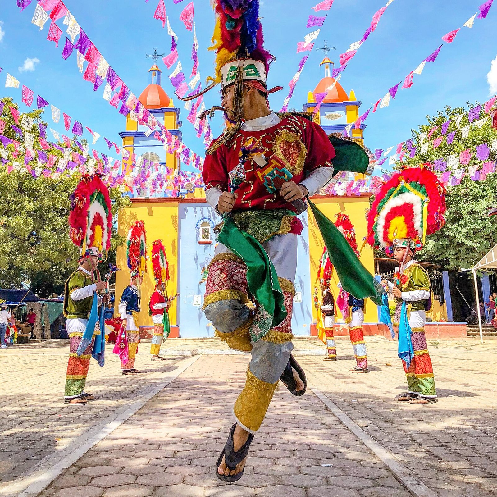
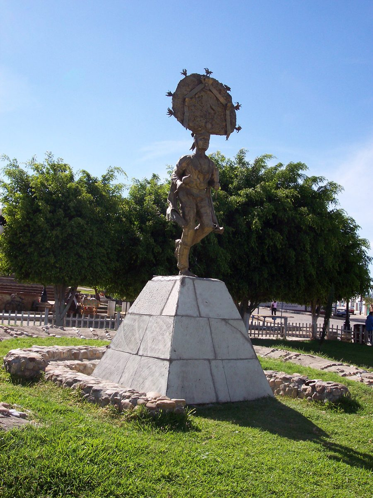

Cada máscara tiene autor
Máscaras y tallas de madera hechas a mano en Oaxaca. Cada pieza lleva un chip NFC con su certificado y el nombre de quien la talló.
Ver las piezasLas piezas
Lo que está publicado en Gestión, tal como está hoy. Cada losa abre su pieza.

El Negrito
El Negrito es uno de los personajes que acompañan la Danza de la Pluma de Cuilápam de Guerrero, Oaxaca, y forma parte de la riqueza cultural y festiva que caracteriza esta tradición. Su presencia contribuye a mantener viva la memoria colectiva de la comunidad, incorporando elementos de convivencia, alegría y expresión popular que complementan la representación de la danza.
- Quién la talló
- Rigoberto Ramírez Robles
- Material
- Zompantle
- Técnica
- Tallado con madera
- Origen
- Cuilápan de Guerrero
- Año
- 2026
- Estado
- En exhibición
- Código
- ANFC-6AJA2J

El Viejito
La máscara está inspirada en la Danza de los Viejitos y representa un rostro masculino de edad avanzada, con una expresión serena y marcada. Destacan sus ojos grandes, cejas pronunciadas, nariz alargada, arrugas, cabello y barba abundante, elementos que le dan carácter y profundidad al rostro.
- Quién la talló
- Rigoberto Ramírez Robles
- Material
- Madera de Zompantle
- Técnica
- Tallado con madera
- Origen
- Cuilápan de Guerrero
- Año
- 2026
- Estado
- En exhibición
- Código
- ANFC-GYPZXY

Pequeña Bestia
Retrato de una mente sin recuerdos.
- Quién la talló
- Maria Soledad Cruz Mtz (M4ri)
- Material
- Haluro de plata
- Técnica
- Improvisada
- Origen
- Sierra Norte
- Año
- 2024
- Estado
- Disponible
- Código
- ANFC-UN7FBX

La danza las pide
En Cuilápam de Guerrero, el Negrito acompaña a la Danza de la Pluma: mientras los danzantes cuentan la conquista, él pone el humor, la fiesta y la memoria del pueblo.
Estas máscaras nacen de esa tradición. Rigoberto Ramírez Robles las talla en zompantle, una madera ligera que sale de árboles caídos o ya secos: él no tala árboles vivos. Empieza sin boceto, con un bloque y una idea, y quita madera hasta que aparece la cara.

Quién las talla
Rigoberto Ramírez RoblesCuilápam de Guerrero, Oaxaca
Rigoberto Ramírez Robles es un artesano originario de Cuilápan de Guerrero, dedicado principalmente a la elaboración de máscaras, figuras talladas en madera y artesanías realizadas a partir de materiales reutilizados.
La trayectoria artesanal de Rigoberto Ramírez Robles, comenzó en 2007, después de sufrir un accidente en motocicleta que le ocasionó fracturas y lo obligó a permanecer inactivo durante un periodo. Debido al tiempo libre y a una situación económica complicada, buscó una actividad que le permitiera generar ingresos.

Acércale el teléfono
Cada pieza sale del taller con un chip NFC escondido y un código impreso. Acerca el teléfono, o escribe el código aquí abajo, y ves quién la hizo, de qué y cuándo.
Un bloque de zompantle, una gubia y días de trabajo. Cada arruga del Viejito se quitó a mano; ninguna sale de un molde.
El equipo de ArtesaNFC la fotografía y escribe con el artesano su historia, su madera, su técnica y el año en que se hizo.
Se graba un chip NFC con su certificado y se bloquea para que nadie lo reescriba. El código, como ANFC-6AJA2J, queda en la etiqueta.
Con cualquier teléfono con NFC, la acercas y se abre su certificado: la pieza, quien la talló y su historia, sin instalar nada.
Quien la compra recibe el certificado original con un PIN. Si un día la regala o la vende, el certificado viaja con ella.
El código está en la etiqueta de la pieza y en su certificado.
Tu pieza, con su autor
Hazte miembro y te escribimos antes que a nadie cuando salga una pieza nueva, con su historia, sus fotos y su precio.
Quiero ser miembro